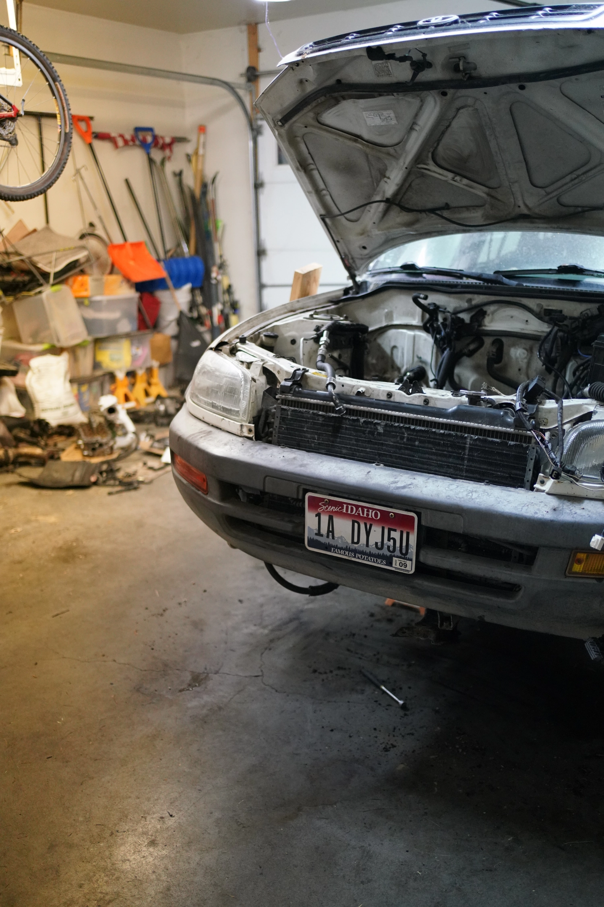
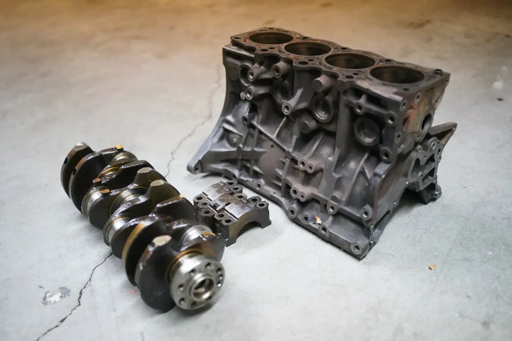

Rav4 Plans
The rav4 currently doesn't run. A vacuum leak lead to the engine running lean and killing it again. King Benjamin was right when he said "I cannot tell you all the things whereby ye may commit sin; for there are divers ways and means, even so many that I cannot number them." (mosiah 4:29)
Plans for the Rav4 include a new engine. Still a 3S block from toyota, but the 3S-GTE. A turbo charged engine with at least twice the horespower of the stock 3s-fe engine. To run such an engine, a new wiring harness is needed.
